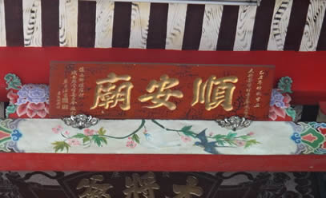
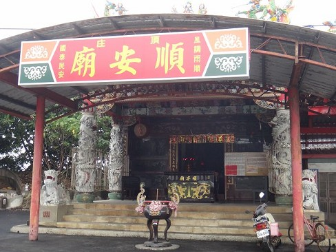
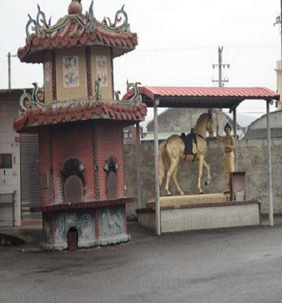
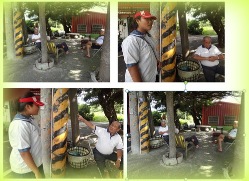

歷史
這座廟宇看來不大，建於兩墓之間，偶而有香客前來上香，不過大多是附近鄉民農閒
時，大夥到廟口喝茶談天之地。聽當地老者談起該座廟的故事，源於明末鄭成功率眾台，其中一將領姓程名忠權號壯熊，率領另一支部隊，欲登陸台灣即為現今線西
沿海，因不黯地形，又遭遇風浪，不幸全軍覆沒，慘遭滅頂。登陸失敗，官兵全數葬身海底，遂飄流至岸邊，由當地鄉民合力安葬於此地。
有求必應
早期居民生活艱苦，有帶疾苦上香者，傳言有求必應，因而一傳十，十傳百，香火日漸興旺，更有鄉民夜裡偶有聽到千軍萬馬的雜踏聲，莫不爭相走告。
傳說
根據前輩傳說，以往出海捕魚的漁民，入夜之後容易迷失方向，此時只要漁民口「大將爺公」聖號，必可見眼前出現一團火花，引導前行，安全返家，沿海各村漁民為了感念大將爺公的庇佑，屢次擴建廟宇以光聖恩。

順安廟供俸大將爺，已經有100年以上，以前是一間小廟(土角厝)改建2~3次，才變成現在這個模樣。

這隻馬和旁邊拉著馬的人，是以前鄭成功率領軍隊前來台灣，可是再搭船來台時遇到風浪，船整個翻船船上的軍隊沉入海裡，漂流到台灣被島上居民看到把它們安葬在這裏面，聽說晚上的時候，可以聽到有人在訓練軍隊的聲音。
 馬下埋著英勇的士兵們
 訪問當地耆老
心得分享:
這次我們來到了具有歷史性的文化古蹟，順安廟，這間廟已經具有一百多年的歷史了，聽過那些耆老說鄭成功來台的故事，就會讓我心驚膽戰的，因為那些鄭成功帶來台灣的官兵，在海上遇到船難所以全部都葬身海底了，所以，線西的居民，就幫他們蓋了這間廟。
<--回頂庄村首頁 |